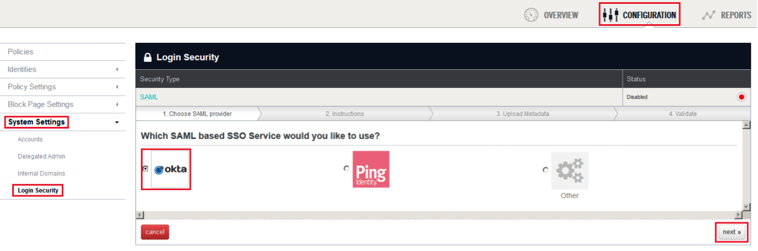
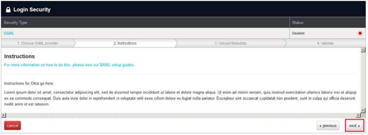
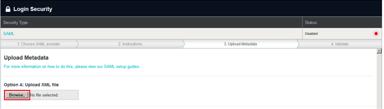
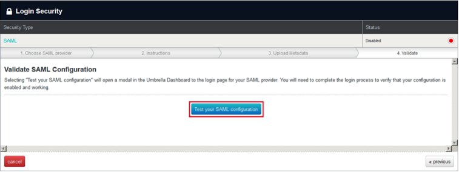
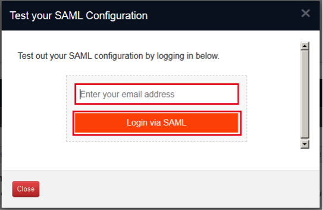
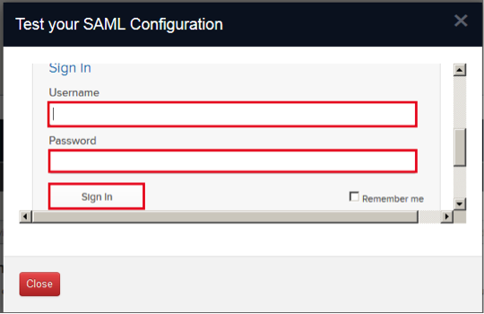
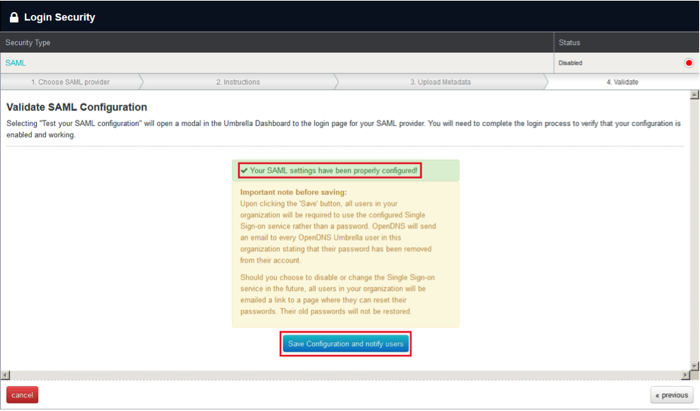
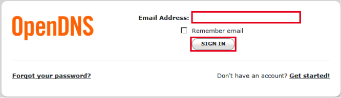

This setup might fail without parameter values that are customized for your organization. Please use the Okta Administrator Dashboard to add an application and view the values that are specific for your organization.
Generate the following IDP Metadata and save it to a file named metadata.xml:
Log into OpenDNS as an administrator.
Select the Configuration tab.
Select System Settings > Login Security on the left navigational panel.
Select Okta.
Click next >>.

The Instructions page opens, click next >>.

The Upload Metadata page opens, select Browse, then select the metadata.xml file you saved in step 1.

The Validate page opens, select Test your SAML configuration.

Enter your OpenDNS email into the corresponding field, then click Login via SAML.

Enter your Okta Username and Password, then click Sign In.

Wait until a Your SAML settings have been properly configured! message appears, then click Save Configuration and notify users.

Done!
Notes:
SP-initiated flows and IDP-initiated flows are supported.
Just in Time (JIT) provisioning is not supported.
For SP-initiated flows, go to https://login.opendns.com/sso/okta. Enter your OpenDNS email, then click SIGN IN.
